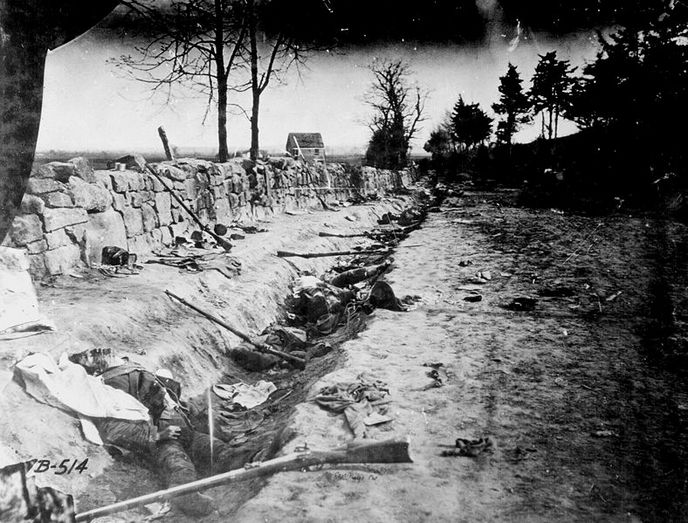
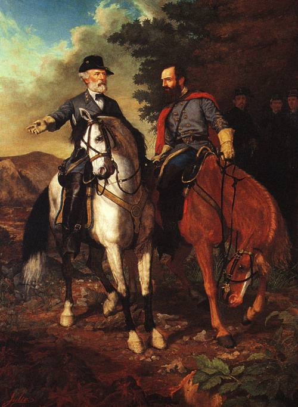

|
The Confederate victory at Chancellorsville capped a
remarkable 11-month period during which Robert E. Lee built
the Army of Northern Virginia into a self-confident and
formidable weapon. The sheer odds against Confederate
success at Chancellorsville elevated it to a special
position among Lee's victories. Union General Joseph Hooker
had rebuilt the Army of the Potomac after Ambrose E.
Burnside's removal from command in late-January 1863.
Hooker entered the Chancellorsville campaign at the head of
a force with ample equipment, strong discipline, and high
morale. He pronounced it "the finest army on the planet."
During the winter of 1862-63, Lee had dispersed his
cavalry to secure sufficient fodder and detached two
divisions under James Longstreet to southeast Virginia.
These measures left him with approximately 61,000 men to
|

Confederate dead at Chancellorsville.
|
face 133,000 Federals. Hooker thus enjoyed the widest
margin of manpower of any Union general who had fought
against the Army of Northern Virginia to that point in the
conflict.
Hooker added an impressive strategic blueprint to his
material advantages. He planned marching the bulk of his
army up the Rappahannock River in a wide turning movement
around Lee's left. At the same time, a sizable force under
John Sedgwick would cross the Rappahannock opposite Lee at
Fredericksburg to hold the Confederates in place. As a
third element in the plan, Federal cavalry under George
Stoneman would swing around Lee's left before striking south
toward Richmond. If all went well, Lee would be caught
between Hooker's powerful turning column to the west and
Sedgwick's troops in his front. Confederate options, thought
Hooker, would be limited to a retreat toward Richmond or
desperate assaults against one or both of the major
components of the Army of the Potomac.
The campaign unfolded rapidly after Hooker began his
march up the Rappahannock on April 27, 1863. The Federals
crossed the Rappahannock and Rapidan rivers, and by evening
on April 30 the flanking force reached the crossroads of
Chancellorsville, ten miles in Lee's rear. There Hooker's
soldiers lay in the midst of the Wilderness of Spotsylvania,
a scrub forest heavily cut over to feed small iron furnaces
in the area. Hooker brimmed with confidence on the night of
April 30. He stated that "our enemy must either
ingloriously fly, or ... give us battle on our own ground,
where certain destruction awaits him."
Lee responded to Hooker's actions with a series of
typically bold moves. Assigning roughly 10,000 men under
Jubal A. Early to watch Sedgwick at Fredericksburg, Lee and
"Stonewall" Jackson hurried the rest of the Army of Northern
Virginia westward to stop Hooker. The decisive moment of
the campaign occurred on the morning of May 1, when the
vanguards of Hooker's and Lee's forces collided near Zoan
Church on the road between Chancellorsville and
Fredericksburg. Hooker lost all offensive spirit,
immediately ordering a withdrawal back to Chancellorsville.
Like a frightened child bravely announcing there are no
ghosts in the dark, Hooker told a subordinate that he had
"Lee just where I want him; he must fight me on my own
ground."
On the night of May 1, Lee and Jackson decided on a bold
flanking maneuver of their own, which Jackson executed
successfully the next day. Jackson's attack on May 2 routed
the Federal Eleventh Corps on Hooker's extreme right flank,
but the bulk of Hooker's army remained between the two
pieces of Lee's force at Chancellorsville. Hooker failed to
exploit this opening, pulling his men into a tighter
|

The "final meeting" of Robert E. Lee and
Stonewall Jackson at Chancellorsville has been an extremely
popular subject of paintings and prints, including
this 1864 example.
|
defensive position in the face of heavy Confederate assaults
on May 3. When Lee learned on that day of Sedgwick's
success in breaching Early's line at Fredericksburg, he
divided his army a third time. Leaving 25,000 men under
"Jeb" Stuart to keep an eye on Hooker, Lee concentrated the
balance of his men several miles west of Fredericksburg at
Salem Church, where the Confederates won a fumbling victory
against Sedgwick on May 4. By the morning of May 6, the
Army of the Potomac had retreated to the north bank of the
Rappahannock, returning the strategic situation to precisely
where it had been at the outset of the campaign.
Lee had crafted a victory often termed his "masterpiece"
but at a cost of more than 12,500 casualties, including
Stonewall Jackson, who was shot by his own men in the
confusing aftermath of the famous flank attack on May 2 (he
died eight days later). Hooker's losses totaled roughly
17,250, a much smaller percentage of his army.
Chancellorsville spread optimism throughout the
Confederacy and cemented a bond between Lee and his soldiers
unrivaled in any other army during the Civil War. Lee
believed his men could accomplish the apparently
impossible--a circumstance that would influence his actions
two months later at Gettysburg. On the Union side, many
officers and soldiers in the Army of the Potomac, disgusted
with Hooker's decision to withdraw on May 1, believed they
had not been given a chance to win the battle. On the home
front, Abraham Lincoln realized on May 6 that Hooker had
failed. A newspaperman recorded the anguished president's
reaction: "My God! My God! What will the country say?"
Source: Joan Waugh, ed., Facts on File Encyclopedia of American
History: Civil War and Reconstruction, 1856 to 1869 (New York: Facts on
File, 2003), 54-56.
|